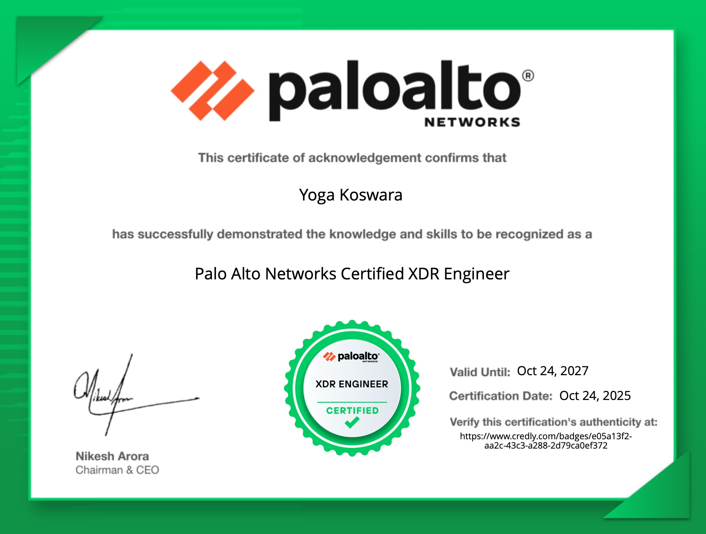
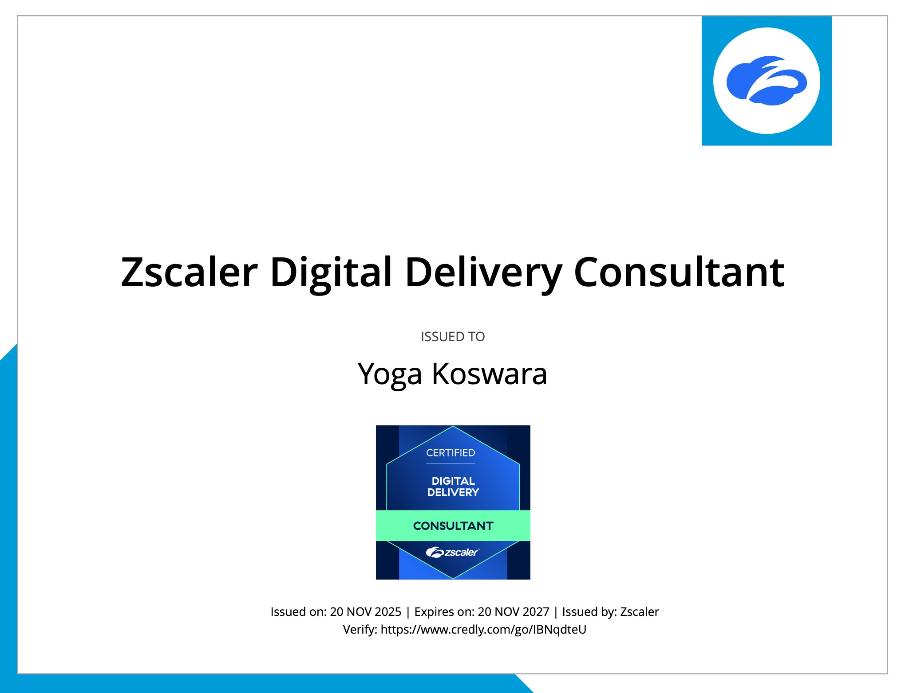
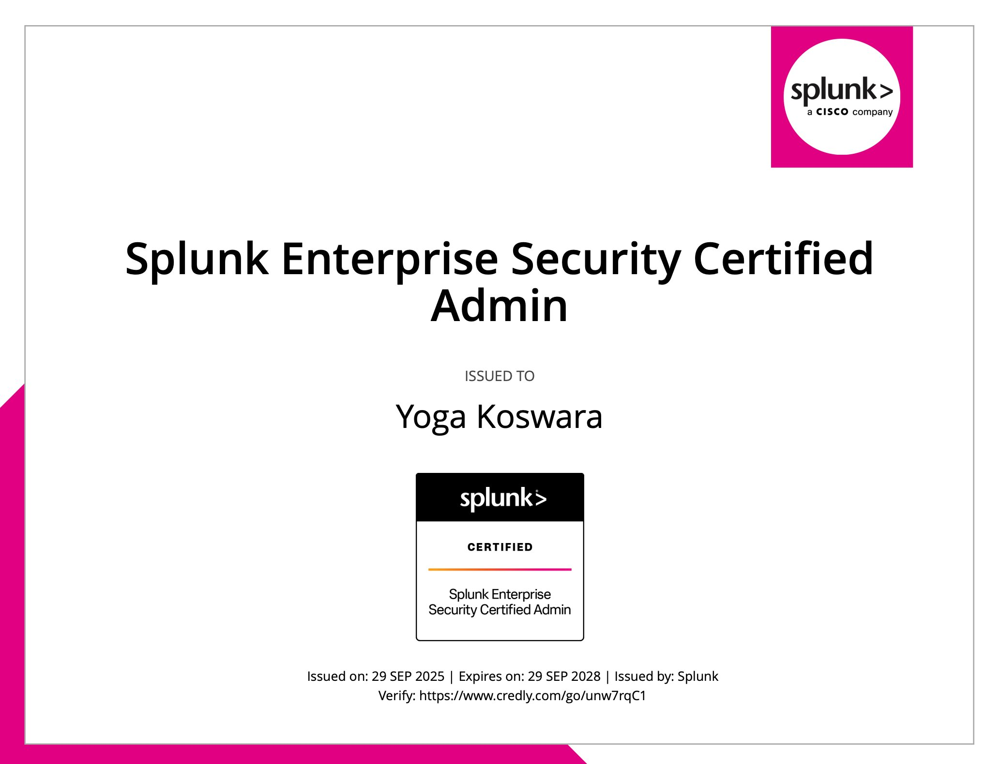

Halo! Nama saya Yoga Koswara, seorang Network & Security Engineer yang berbasis di Jakarta, Indonesia. Saya berfokus pada bidang keamanan jaringan dan infrastruktur enterprise, menangani implementasi serta troubleshooting berbagai solusi keamanan untuk klien skala besar.
Pengalaman saya mencakup berbagai produk enterprise Security seperti Cisco Network and Security, CyberArk Priviladge Access Manager, F5 Load Balancer, Zscaler Zero Trust Access, Aruba Wireless , Splunk Security Event Manager.
Hubungi saya di: LinkedIn atau yogakoswara.it@gmail.com
| Periode | Perusahaan | Posisi |
|---|---|---|
| Nov 2019 - Sekarang | Packet Systems Indonesia | System Engineer – Enterprise Security Team |
| Mar 2018 - Okt 2019 | PT Wise Pacific Venture | Technical Consultant - Security |

Palo Alto XDR Engineer
Zscaler Digital Delivery Consultant
Splunk Enterprise Security Admin